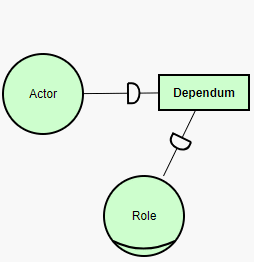

piStar tool
An open-source, online goal modeling tool for i* 2.0. No installation required.
iStar 2.0
Create i* 2.0 models with this free online modeling tool.
Learn more »
The iStar 2.0 Language Guide define constraints on which relationships (links) are valid. Whereas most of these constraints are enforced on the piStar tool, preventing the creation of invalid models, some of them have been ignored:
- The tool allows the creation of cyclic links when more than two elements are involved
- The tool allows the creation of and-refinements with a single child
Custom properties
Do you need to know cost, rationale, priority, <insert your need here>? Don't sweat it, add any property you want to your elements.
No installation
The piStar tool runs on your browser, no installation is required. Works best on Chrome. Once it's open it can be used offline.
Smooth links
Add vertices to customize your links.
Auto-resize
Automatic resizing of actors to fit your content.
Collapsable actors
(Un)collapse actors with a simple alt+click, enabling you to have both SD and SR diagrams in a single model.

Error explanation NEW
Visual aids help users learning the i* syntax.
Export to SVG and PNG
Create high quality images from your models, ready to be used on journal papers, books, posters and presentations.
Full screen
To make the most of the tool, use the Fullscreen toggle that you can find in the Options menu.
Privacy
This modeling tool runs entirely on your browser. Not a single piece of your models are sent to our servers.
This page here has no cookies. However, by accessing the actual tool, the Google Analytics service will be activated with the Anonymize IP option active and Marketing features deactivated. This way we can still learn about the usage of the tool while preventing Google from recording any personal data.
From within the tool, you can setup your privacy settings and turn off any data collection.
Dependencies
The following open-source libraries and frameworks made it possible:
- JointJS - provides the core modeling functionalities
- Bootstrap - professional-looking style and components
- jQuery - facilitates DOM manipulation and cross-browser support
- X-editable - enables inline editing of DOM elements
- Bootbox - for uniformed cross-browser dialogs
Hey there!
The piStar tool is made for you. Help us improve it by giving us your feedback.
News
Version 2.0.0 released!A new version of the tool is available! This is our biggest update yet, with a revamped UI, improved validity checks, and enhanced model aesthetics, as well as a host of new features. Please let us know if you find any bug or simply send us your feedback. Features
Aesthetic changesCompare below the visual changes from version 1.2 to 2.0. 
Improved Validity ChecksTwo iStar 2.0 constraints that were not enforced in previous verstions of the tool are now enforced:
The following constraints are still ignored:
Users are still able to load models from previous versions that have invalid links, but they receive a notification suggesting to fix such links. Moreover, the error messages when trying to create an invalid link are now clearer. Improved User InterfaceA new User Interface (see below) has been designed not only to address some of the previous usability issues, but also to provide space for new and future functionalities. Those are the highlights of this new version. For more details, check out the changelog. |
2019-04-06 |
Version 1.2.0 - it grows!Version 1.2.0 is now available: now the space for drawing depends on your window's size, thus it's likely that your modeling will get comfy! Oh no, there is no more room for your model!? Don't worry, now the modeling area will increase automatically to the left and to the right as needed. Those are the new features, but there's some enhancements and bug fixes as well. Check out the changelog. By the way, we are out of known bugs! Help us, find them and shout out (pretty please?)! |
2018-03-20 |
Version 1.1.0 - complete savingVersion 1.1.0 is now available! and you are finally able to restore your models exactly as they were: what was collapsed remains collapsed, and links' vertices are also kept intact. Non-english speaking modelers (including myself) are now able to save and load models containing non-english symbols. The tested languages are: Arabic, Chinese, Japanese, Portuguese, Russian, and Turkish. Those are the new features, but there's also a whole lot of enhancements and bug fixes. Check out the changelog. |
2018-03-12 |
What about Privacy?We are adding (back) Google Analytics tracking, now with Anonymous IP. What do you think of it? Is it a deal breaker? Do you have suggestions on the topic? |
2018-03-12 |
Version 1.0.1 releasedA new version of piStar is online, with small but useful adjustments. Check out the changelog. |
2018-03-05 |
Now with this landing pageThis landing page here was created and published, aiming to make the piStar tool more accessible. |
2018-03-05 |